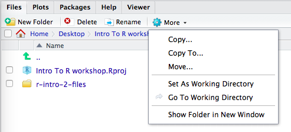

Introduction to R and RStudio
Learning Objectives
- Understand the value of learning R
- Navigate RStudio
- Define terms: object, function, argument, package, vector, data frame.
- Use help documentation in RStudio.
Why learn R?
R is free, open-source, and cross-platform. Anyone can inspect the source code to see how R works. Because of this transparency, there is less chance for mistakes, and if you (or someone else) find some, you can report and fix bugs. Because R is open source and is supported by a large community of developers and users, there is a very large selection of third-party add-on packages which are freely available to extend R’s native capabilities.
R code is great for reproducibility. Reproducibility is when someone else (including your future self) can obtain the same results from the same dataset when using the same analysis. R integrates with other tools to generate manuscripts from your code. If you collect more data, or fix a mistake in your dataset, the figures and the statistical tests in your manuscript are updated automatically.
R relies on a series of written commands, not on remembering a succession of pointing and clicking. If you want to redo your analysis because you collected more data, you don’t have to remember which button you clicked in which order to obtain your results; you just have to run your script again.
R is interdisciplinary and extensible With 10,000+ packages that can be installed to extend its capabilities, R provides a framework that allows you to combine statistical approaches from many scientific disciplines to best suit the analytical framework you need to analyze your data. For instance, R has packages for image analysis, GIS, time series, population genetics, and a lot more.
R works on data of all shapes and sizes. The skills you learn with R scale easily with the size of your dataset. Whether your dataset has hundreds or millions of lines, it won’t make much difference to you. R is designed for data analysis. It comes with special data structures and data types that make handling of missing data and statistical factors convenient. R can connect to spreadsheets, databases, and many other data formats, on your computer or on the web.
R produces high-quality graphics. The plotting functionalities in R are endless, and allow you to adjust any aspect of your graph to convey most effectively the message from your data.
R has a large and welcoming community. Thousands of people use R daily. Many of them are willing to help you through mailing lists and websites such as Stack Overflow, or on the RStudio community. Questions which are backed up with short, reproducible code snippets are more likely to attract knowledgeable responses.
Starting out in R
R is both a programming language and an interactive environment for data exploration and statistics.
Working with R is primarily text-based. The basic mode of use for R is that the user provides commands in the R language and then R computes and displays the result.
Downloading, Installing and Running R
Download
R can be downloaded from CRAN (The Comprehensive R Archive Network) for Windows, Linux, or Mac.
Install
Installation of R is like most software packages and you will be guided. Should you have any issues or need help you can refer to R Installation and Administration
Running
R can be launched from your software or applications launcher or When working at a command line on UNIX or Windows, the command R can be used for starting the main R program in the form R
You will see a console similar to this appear:
While it is possible to work solely through the console or using a command line interface, the ideal environment to work in R is RStudio.
RStudio
RStudio is a user interface for working with R. It is called an Integrated Development Environment (IDE): a piece of software that provides tools to make programming easier. RStudio acts as a sort of wrapper around the R language. You can use R without RStudio, but it’s much more limiting. RStudio makes it easier to import datasets, create and write scripts, and makes using R much more effective. RStudio is also free and open source. To function correctly, RStudio needs R and therefore both need to be installed on your computer. But for this class we’ll be using a browser based version called RStudio Cloud (see directions in the [RStudio Cloud] section below.)
RStudio is divided into four “panes”. The placement of these panes and their content can be customized (see menu, Tools -> Global Options -> Pane Layout).
The Default Layout is:
- Top Left - Source: your scripts and documents
- Bottom Left - Console: what R would look and be like without RStudio
- Top Right - Environment/History: look here to see what you have done
- Bottom Right - Files and more: see the contents of the project/working directory here, like your Script.R file

Follow Along at Home
There are two options:
RStudio
- Follow the instructions above to download R and RStudio to your personal computer
- Download the folder
Session01_RBasicsfrom https://osf.io/6ra5v/files/osfstorage and unzip it to your computer in a place you’ll be able to find it easily, such as your Desktop or Documents folder.
Posit Cloud
Posit (RStudio) Cloud is a browser-based version of RStudio. It will allow you to use RStudio without needing to download anything to your computer. Posit Cloud automatically organizes things into Projects. You can also easily share your R projects with others.
Get Started:
- Create your free RStudio Cloud account at https://rstudio.cloud/plans/free.
- Go to the class project https://rstudio.cloud/content/4241048
- Note the text that marks this as a Temporary Copy. Select the
Save a Permanent Copybutton to begin working!
Working in the Console
The console is an interactive environment for RStudio, click on the “Console” pane, type 3 + 3 and press enter. R displays the result of the calculation.
3 + 3[1] 6+ is called an operator. R has the operators you would expect for for basic mathematics:
Arithmetic operators
| operator | meaning |
|---|---|
| + | plus |
| - | minus |
| * | times |
| / | divided by |
| ^ | exponent |
Logical Operators
| operator | meaning |
|---|---|
| == | exactly equal |
| != | not equal to |
| < | less than |
| <= | less than or equal to |
| > | greater than |
| >= | greater than or equal to |
| x|y | x or y |
| x&y | x and y |
| !x | not x |
Spaces can be used to make code easier to read.
2 * 2 == 4[1] TRUEObjects
Creating Objects
When you have certain values, data, plots, etc that you want to work with You can create objects (make assignments) in R with the assignment operator <-:
All R statements where you create objects, assignment statements, have the same form:
object_name <- valueWhen reading that code say “object name gets value” in your head.
x <- 3 * 4
x[1] 12Once you have an object you can do other calculations with it.
x * x[1] 144Objects vs. Variables
What are known as objects in R are known as variables in many other programming languages. Depending on the context, object and variable can have drastically different meanings. However, in this lesson, the two words are used synonymously. For more information see: https://cran.r-project.org/doc/manuals/r-release/R-lang.html#Objects
Try it Yourself!
CHALLENGE
- Create an object with the value of your name
- Create an object with the value of your age.
Working with Objects
That last example was kind of abstract. So let’s look at a more practical example.
Let’s do some calculations with the population of Maryland 1. First we can save the population number to an object. We will call it md_pop because that is short, descriptive, and easy to remember.
md_pop <- 6200000What percentage of the Maryland population are adults? According to the Census Bureau 2, 78% of the Maryland population is 18 and over. We can use that to calculate the number of adults in Maryland.
md_adult_pop <- .78 * md_popNext, we want to know what percentage of people in Maryland have been fully vaccinated for COVID-19. As of early July 2022, when this lesson was first written, 4.68 million people of all ages had been fully vaccinated in Maryland 3. So let’s create another object:
md_vax_pop <- 4680000Now we can calculate the percentage of the Maryland population that was vaccinated at that time.
percent_vax <- (md_vax_pop / md_pop) * 100
percent_vax[1] 75.48387The information in a variable can be updated as necessary. As of May 2023, when the CDC stopped extensively tracking COVID-19 vaccination information, 4.83 million people of all ages had been vaccinated in Maryland. We can re-assign the value of md_vax_pop
md_vax_pop <- 4830000Then recalculate percent_vax
percent_vax <- (md_vax_pop / md_pop) * 100
percent_vax[1] 77.90323
Tip
You will make lots of assignments and <- is a pain to type. Avoid the temptation to use =: it will work, but it will cause confusion later. Instead, use RStudio’s keyboard shortcut: Alt + - (the minus sign).
Notice that RStudio automagically surrounds <- with spaces, which is a good code formatting practice. Code is miserable to read on a good day, so giveyoureyesabreak and use spaces.
Naming Objects
The name for objects must start with a letter, and can only contain letters, numbers, underscores (_)and periods (.). The name of the object should describe what is being assigned so they typically will be multiple words. One convention used is snake_case where lowercase words are separated with _. Another popular style is camelCase where compound words or phrases are written so that each word or abbreviation in the middle of the phrase begins with a capital letter, with no intervening spaces or punctuation and the first letter is lowercase.
thisIsCamelCase
some_use_snake_case
others.use.periods #avoid
Others_pRefer.to_RENOUNCEconvention #avoid
Try it Yourself!
CHALLENGE
Earlier you created an object called md_adult_pop which used Census data to calculate the number of adults living in Maryland. According to the CDC4, 4.17 million adults in Maryland had been fully vaccinated against COVID-19 as of May 2023.
- Assign the number of fully vaccinated adults in Maryland to a new object.
- Use the new object together with
md_adult_popto calculate the percentage of adults in Maryland who are fully vaccinated. Save this to an object calledmd_adult_percent_vax.
Saving code in an R script
It might seem like you could just as easily calculate the percentage of vaccinated Marylanders by hand. But what if you had to do it again and again, multiple times a day, for days on end? What if you had to make sure multiple people on your team could perform the same task?
This is where the real strength of R as a programming language comes in. You can save all the steps of your analysis to a script. This is especially powerful if you have long and complicated analyses. It is how R contributes to reproducible and open science.
Open the file vax_count.R. Here we have recorded the steps we just took. So let’s say you were training a new employee to run this very important analysis. Now all they have to do is input the new vaccination number, and run the script.
The usual workflow is to save your code in an R script (“.R file”). Go to “File/New File/R Script” to create a new R script. Code in your R script can be sent to the console by selecting it or placing the cursor on the correct line, and then pressing Control-Enter (Command-Enter on a Mac).
Tip
Add comments to code, using lines starting with the # character. This makes it easier for others to follow what the code is doing (and also for us the next time we come back to it).
Setting your Working Directory
The working directory is the directory ( or folder) which you are currently in, and from which any code you run will be executed. It’s important to know what directory you are working in, so your code runs predictably. For example, when working with data, you need to know how to tell the computer where that data file is located and where to save any output files. You’ll provide those locations in relationship to the working directory.
We can find out our current working directory with the function getwd()
getwd()[1] "C:/Users/ayarnell/OneDrive - University of Maryland Baltimore/Desktop/intro-to-r"You can select a different working directory with the function setwd(). Let’s set our working directory to the Session01 folder.
setwd("~/Desktop/Session01_RBasics") #This path may vary based on exact computer set up.Alternatively you can navigate to the desired working directory using the Files pane and set the working directory from there. Click the gear wheel for “More” within the RStudio file pane.

Or by selecting the drop down list found in the Session menu at the top of the RStudio window.

Functions and their arguments
getwd() and setwd() are examples of functions. Functions are “canned scripts” that automate more complicated sets of commands including operations assignments, etc. Many functions are predefined, or can be made available by importing R packages (more on that later). A function usually gets one or more inputs called arguments. Functions often (but not always) return a value.
A typical example would be the function round(). The input (the argument) must be a number, and the return value (in fact, the output) is that number rounded to the nearest whole number. Executing a function (‘running it’) is called calling the function. You can save the output of a function to an object. The format would look like:
b <- round(a)Here, the value of a is given to the round() function, the round() function rounds the number, and returns the value which is then assigned to the object b.
The return ‘value’ of a function need not be numerical (like that of round()), and it also does not need to be a single item: it can be a set of things, or even a dataset. We’ll see that when we read data files into R.
Arguments can be anything, not only numbers or file names, but also other objects. Exactly what each argument means differs per function, and must be looked up in the documentation (see below). Some functions take arguments which may either be specified by the user, or, if left out, take on a default value: these are called options. Options are typically used to alter the way the function operates, such as whether it ignores ‘bad values’, or what symbol to use in a plot. However, if you want something specific, you can specify a value of your choice which will be used instead of the default.
round() only needs one argument, a number, or object that is storing a numerical value.
round(percent_vax)[1] 78Here, we’ve called round() on our percent_vax object and it returned 78. That’s because the default action of the function is to round to the nearest whole number. If we want more digits we can see how to do that by getting information about the round function. We can use args(round) or look at the help for this function using ?round.
args(round)function (x, digits = 0, ...)
NULLWe see that if we want a different number of digits, we can type digits=2 or however many we want.
round(percent_vax, digits = 2)[1] 77.9If you provide the arguments in the exact same order as they are defined you don’t have to name them:
round(percent_vax, 2)[1] 77.9And if you do name the arguments, you can switch their order:
round(digits = 2, x = percent_vax)[1] 77.9It’s good practice to put the non-optional arguments (like the number you’re rounding) first in your function call, and to specify the names of all optional arguments. If you don’t, someone reading your code might have to look up the definition of a function with unfamiliar arguments to understand what you’re doing.
Getting Help
In the previous example we looked up the arguments to round() using args(round) alternatively we couldve looked at the help page for round() to find this out with ?round. To get help about a particular package or function you can access the help pane in RStudio and type its name in the search box.

The help() function and ? help operator in R provide access to the documentation pages for R functions, data sets, and other objects, both for packages in the standard R distribution and for contributed packages. To do so type as follows
help({function})
help(package = {package name})
?{function}
?"{package name}"Try it Yourself!
CHALLENGE
- Create a new R script called
Exercises.R. Save it to the Session01 folder (which should be your working directory). Use this file to answer any future challenge questions. - Use one of the strategies you learned in the
Getting Helpsection to look at the documentation for theseqfunction. Use this documentation to figure out how to cgenerate the following sequence:0 10 20 30 40 50 60 70 80 90 100
Vectors
What is a Vector?
“Vector” means different things in different fields (mathematics, geometry, biology), but in R it is a fancy name for a collection of values. We call the individual values elements of the vector. It is one of the most common data structures you will work with in R.
We can make vectors with the function c( ), for example c(1,2,3). c means “combine”. R is obsessed with vectors, in R even single numbers are vectors of length one. Many things that can be done with a single number can also be done with a vector. For example arithmetic can be done on vectors as it can be on single numbers.
Working with Vectors
Let’s say that we have a group of patients in our clinic. (See info in patients_list.txt in the Session01 folder.) We can store their names in a vector.
patients <- c("Maria", "Jon", "Ali", "Luis", "Mei" )
patients[1] "Maria" "Jon" "Ali" "Luis" "Mei" If we later wanted to add a name, it’s easy to do so
patients <- c(patients, "Emma")
patients[1] "Maria" "Jon" "Ali" "Luis" "Mei" "Emma" Maybe we also want to store the weights of these patients. Since these are their weights in pounds, we will call our object weight_lb
weight_lb <- c(122, 320, 217, 142, 174, 252)
weight_lb[1] 122 320 217 142 174 252So far, we have created vectors of two different data types: character and numeric.
You can do arithmetic with numeric vectors. For example, let’s convert the weight of our patients in lbs to the the weight in kilograms by multiplying each weight in lbs by 2.2.
We could do this one by one:
122 / 2.2[1] 55.45455320 / 2.2[1] 145.4545217 / 2.2[1] 98.63636etc.
But that would be a long and tedious process, especially if you had more than 6 patients.
Instead, let’s divide the vector by 2.2 and save that to a new object. We will call this object weight_kg
weight_kg <- weight_lb / 2.2
#you could also round the weight
weight_kg <- round((weight_lb / 2.2), digits = 2)
weight_kg[1] 55.45 145.45 98.64 64.55 79.09 114.55We could use the mean() function to find out the mean weight of patients at our clinic.
mean(weight_lb)[1] 204.5You will not be able to perform calculations with character vectors.
patients + "Sue"Error in patients + "Sue": non-numeric argument to binary operatorRemember we used c() to add a value to our character vector.
::: ::: {.callout-important title=“Data Types”}
There are numerous data types. Some of the other most common data types you will encounter are numeric data, character data and logical data. Vectors of one data type only are called atomic vectors. Read more about vectors and data types in the book R for Data Science
:::
Now let’s try working with some logical data. Logical data is the valuesTRUE, FALSE, or NA
We want to record if our patients have been fully vaccinated. We will record this as TRUE if they have been, FALSE if they have not been, and NA if we do not have this information.
vax_status <- c(TRUE, TRUE, FALSE, NA, TRUE, FALSE)
vax_status[1] TRUE TRUE FALSE NA TRUE FALSEAll vector types have a length property which you can determine with the length() function.
length(patients)[1] 6Its helpful to think of the length of a vector as the number of elements in the vector.
You can always find out the data type of your vector with the class() function.
class(patients)[1] "character"class(weight_lb)[1] "numeric"class(vax_status)[1] "logical"Try it Yourself!
CHALLENGE
- Create a vector of the following names: Marcia, Jan, Cindy. Assign this to an object called
brady_girls. - Create another vector of the following names: Greg, Peter, Bobby. Assign this to an object called
brady_boys. - Combine the
brady_girlsandbrady_boysvectors together and assign to an object calledbrady_bunch. - Add the names Carol, Mike, and Alice to the
brady_bunchvector
Missing Data
R also has many tools to help with missing data, a very common occurrence.
Suppose you tried to calculate the mean of a vector with some missing values (represented here with the logical NA. For example, what if we had failed to capture the weight of some of the patients at our clinic, so our weight vector looks as follows:
missing_wgt <- c(122, NA, 217, NA, 174, 252)
mean(missing_wgt)[1] NAThe missing values cause an error, and the mean cannot be correctly calculated.
To get around this, you can use the argument na.rm = TRUE. This says to remove the NA values before attempting to perform the calculation.
mean(missing_wgt, na.rm = TRUE)[1] 191.25You can use the logical operator is.na() and it’s opposite !is.na() to check for NA values in your dataset. is.na() returns a logical vector of the same length as the original with a TRUE for every missing value and a FALSE for every value that is not missing,
is.na(missing_wgt)[1] FALSE TRUE FALSE TRUE FALSE FALSE!is.na(missing_wgt)[1] TRUE FALSE TRUE FALSE TRUE TRUEWe can use the sum() function with is.na() to count up the number of missing values in our vector. This works because the computer understands TRUE as 1 and FALSE as 0.
sum(is.na(missing_wgt))[1] 2For more on how to work with missing data, check out this Data Carpentry lesson
Mixing Data Types
We said above that vectors are supposed to have only one data type, but what happens if we mix multiple data types in one vector?
Sometimes the best way to understand R is to try some examples and see what it does.
Try it Yourself!
CHALLENGE
What will happen in each of these examples? Pay attention to the resulting data type of each vector. Try running this code to see!
patient <- c("Maria", 122, TRUE)name_weight <- c("John", 320, 145)weight_status <- c(217, 99, FALSE)
Why do you think this happens?
Indexing and Subsetting vectors
Access elements of a vector with [ ], for example
patients[1][1] "Maria" patients[4][1] "Luis"You can use a colon : to access consecutive elements of a vector.
patients[2:4][1] "Jon" "Ali" "Luis"You can also assign to a specific element of a vector. We realize that we misspelled the name of our patient John, so we can overwrite our old value by assigning a new name to that element in our vector.
patients[2] <- "John"
patients[1] "Maria" "John" "Ali" "Luis" "Mei" "Emma" Can we use a vector to index another vector? Yes!
Lets say we want to know which of our patients have been vaccinated. We know the vaccination status because we have a vector named vax_status lets look at it
vax_status[1] TRUE TRUE FALSE NA TRUE FALSELooking at the output we see the index of vaccinated people is elements 1, 2, and 5. or where vax_status is TRUE in the output. We can use this numerical index to subset another from our vector patients which will give us a result that we’ll assign to a new object vax_patients.
vaxInd <- c(1,2,5)
patients[vaxInd] # this line is saying patients[c(1,2,5)][1] "Maria" "John" "Mei" Now we can assign this vector to an object vax_patients to quickly look at our vaccinated patients.
vax_patients <- patients[vaxInd]
vax_patients[1] "Maria" "John" "Mei" That was great! The problem with this approach is that if we’re in the real world and have a patient population of 1000 it will be really hard to go through our vax_status vector and see who has vax_status is TRUE. Fortunately there is a way to deal with this! Using conditional subsetting We could equivalently have written:
patients[vax_status == TRUE][1] "Maria" "John" NA "Mei" This output keeps the NA’s in there and that is not helpful since we only want to know who is vaccinated. Instead we can add a second condition! This condition is awesome because we can now show off our skills of working with missing data!
patients[vax_status == TRUE & !is.na(vax_status)][1] "Maria" "John" "Mei" Another thing we can do is to assign our logical expression to an object so we can index our vector using it but also index other data structures like data frames which we are about to learn about. To do this would be like this:
# assign logical expression to an object
are_vaccinated <- vax_status == TRUE & !is.na(vax_status)
# subset the vector according to the logical expression via using the object.
patients[are_vaccinated][1] "Maria" "John" "Mei" Try it Yourself!
CHALLENGE
- Use bracket notation to access the 4th element of the
brady_bunchvector you created earlier. - Use bracket notation to access the 7th through 9th elements of hte
brady_bunchvector.
Data frames, Tibbles, and Exploring Data
Data frames are another VIP data structure in R. While vectors are one dimensional data structures. Data frames are two dimensional (often called tabular or rectangular data). This is similar to data as you might be used to seeing it in a spreadsheet. You can think of a data frame as consisting of columns of vectors. As vectors,each column in a data frame is of one data type, but the data frame over all can hold multiple data types.

A tibble is a particular class of data frame which is common in the tidyverse family of packages. Tibbles are useful for their printing properties and because they are less likely try to change the data type of columns on import (e.g. from character to factor).
Creating data frames
Data frames are usually created by reading in a dataset using the read.table() or read.csv() which we will cover in our next session. However, data frames can also be created explicitly with the data.frame() function or they can be coerced from other types of objects like lists. Now that we know vectors form the columns of data frames, we can take the vectors we created for our patient data and combine them together in a data frame.
patient_data <- data.frame(patients, weight_lb, weight_kg, vax_status)
patient_data patients weight_lb weight_kg vax_status
1 Maria 122 55.45 TRUE
2 John 320 145.45 TRUE
3 Ali 217 98.64 FALSE
4 Luis 142 64.55 NA
5 Mei 174 79.09 TRUE
6 Emma 252 114.55 FALSEExploring data frames
Now we will look at ways to explore the contents of a data frame. For this part of the lesson we will use an object variants, a data frame, which is the .rds file in the data subfolder of your Session01 folder. To access this object locate variants.rds in the file viewer and click on it. In the dialog box that pops up select “OK” In the next session you will learn how to load data in to R but for now we have done this for you so you can focus on learning about exploring data frames.
The variants object is a dataset that comes from a real world experiment in E. Coli, you can find out more about the study in the Tenaillon et al 2016 paper 5. The variants object is tabular version of a specialized genomics file type called a VCF file. VCF files are the output of a bioinformatics pipeline that starts with FASTQ files that come from a sequencer and ends with a VCF File. This pipeline typically happens outside of R and RStudio.
Your initial instinct with working with this object is to want to see it in a familiar spreadsheet form. The View() function gives us a spreadsheet-like view of the data frame.
View(variants)Using the summary() function and, we can learn a lot about the variants data frame including some summary statistics. Let’s examine what this function can tell us:
## get summary statistics on a data frame
summary(variants) sample_id CHROM POS ID
Length:801 Length:801 Min. : 1521 Mode:logical
Class :character Class :character 1st Qu.:1115970 NA's:801
Mode :character Mode :character Median :2290361
Mean :2243682
3rd Qu.:3317082
Max. :4629225
REF ALT QUAL FILTER
Length:801 Length:801 Min. : 4.385 Mode:logical
Class :character Class :character 1st Qu.:139.000 NA's:801
Mode :character Mode :character Median :195.000
Mean :172.276
3rd Qu.:225.000
Max. :228.000
INDEL IDV IMF DP
Mode :logical Min. : 2.000 Min. :0.5714 Min. : 2.00
FALSE:700 1st Qu.: 7.000 1st Qu.:0.8824 1st Qu.: 7.00
TRUE :101 Median : 9.000 Median :1.0000 Median :10.00
Mean : 9.396 Mean :0.9219 Mean :10.57
3rd Qu.:11.000 3rd Qu.:1.0000 3rd Qu.:13.00
Max. :20.000 Max. :1.0000 Max. :79.00
NA's :700 NA's :700
VDB RPB MQB BQB
Min. :0.0005387 Min. :0.0000 Min. :0.0000 Min. :0.1153
1st Qu.:0.2180410 1st Qu.:0.3776 1st Qu.:0.1070 1st Qu.:0.6963
Median :0.4827410 Median :0.8663 Median :0.2872 Median :0.8615
Mean :0.4926291 Mean :0.6970 Mean :0.5330 Mean :0.7784
3rd Qu.:0.7598940 3rd Qu.:1.0000 3rd Qu.:1.0000 3rd Qu.:1.0000
Max. :0.9997130 Max. :1.0000 Max. :1.0000 Max. :1.0000
NA's :773 NA's :773 NA's :773
MQSB SGB MQ0F ICB
Min. :0.01348 Min. :-0.6931 Min. :0.00000 Mode:logical
1st Qu.:0.95494 1st Qu.:-0.6762 1st Qu.:0.00000 NA's:801
Median :1.00000 Median :-0.6620 Median :0.00000
Mean :0.96428 Mean :-0.6444 Mean :0.01127
3rd Qu.:1.00000 3rd Qu.:-0.6364 3rd Qu.:0.00000
Max. :1.01283 Max. :-0.4536 Max. :0.66667
NA's :48
HOB AC AN DP4 MQ
Mode:logical Min. :1 Min. :1 Length:801 Min. :10.00
NA's:801 1st Qu.:1 1st Qu.:1 Class :character 1st Qu.:60.00
Median :1 Median :1 Mode :character Median :60.00
Mean :1 Mean :1 Mean :58.19
3rd Qu.:1 3rd Qu.:1 3rd Qu.:60.00
Max. :1 Max. :1 Max. :60.00
Indiv gt_PL gt_GT gt_GT_alleles
Length:801 Min. : 310 Min. :1 Length:801
Class :character 1st Qu.: 1760 1st Qu.:1 Class :character
Mode :character Median : 2290 Median :1 Mode :character
Mean : 3392 Mean :1
3rd Qu.: 2550 3rd Qu.:1
Max. :255156 Max. :1
The original dataset had 29 variables, so we get 29 fields to look at in the summary() output that summarize the data for each variable. The QUAL, IMF, and VDB variables (and several others) are numerical data and so you get summary statistics on the min and max values for these columns, as well as mean, median, and interquartile ranges. Many of the other variables (e.g. sample_id) are treated as characters data (more on this in a bit).
Running the name variants of the data frame in the console alone shows the first 10 rows, print() with the n argument can be used to show more than the first 10 rows on the console. Keep in mind this allows you to only see the number of variables that fit in the width of your console. So wider console window allows to see more variables.
print(variants, n = 25)If its the variable names you’re after you can do that with names() or colnames()
colnames(variants) # you could also use names() [1] "sample_id" "CHROM" "POS" "ID"
[5] "REF" "ALT" "QUAL" "FILTER"
[9] "INDEL" "IDV" "IMF" "DP"
[13] "VDB" "RPB" "MQB" "BQB"
[17] "MQSB" "SGB" "MQ0F" "ICB"
[21] "HOB" "AC" "AN" "DP4"
[25] "MQ" "Indiv" "gt_PL" "gt_GT"
[29] "gt_GT_alleles"You have access to details about the number of columns and rows also:
# number of rows in variants
nrow(variants)[1] 801# number of columns in variants
ncol(variants)[1] 29Subsetting data frames Similar to subsetting vectors using bracket syntax [], data frames can be subset using [row,column]. You can provide single dimensions to row and column or variations.
variants[4, 5]# A tibble: 1 × 1
REF
<chr>
1 CTTTTTTTWhile the output of this subset is a single value the output is considered a data frame. This is typical of tibbles.
You can use a column name (in quotes and literally the name of the variable) to subset instead of a number (numerical index):
variants[4, "REF"]# A tibble: 1 × 1
REF
<chr>
1 CTTTTTTTThe column or row may be omitted to retrieve the entire row or column.
variants[4,]# A tibble: 1 × 29
sample_id CHROM POS ID REF ALT QUAL FILTER INDEL IDV IMF DP
<chr> <chr> <dbl> <lgl> <chr> <chr> <dbl> <lgl> <lgl> <dbl> <dbl> <dbl>
1 SRR2584863 CP00… 433359 NA CTTT… CTTT… 64 NA TRUE 12 1 12
# ℹ 17 more variables: VDB <dbl>, RPB <dbl>, MQB <dbl>, BQB <dbl>, MQSB <dbl>,
# SGB <dbl>, MQ0F <dbl>, ICB <lgl>, HOB <lgl>, AC <dbl>, AN <dbl>, DP4 <chr>,
# MQ <dbl>, Indiv <chr>, gt_PL <dbl>, gt_GT <dbl>, gt_GT_alleles <chr>variants[, "REF"]# A tibble: 801 × 1
REF
<chr>
1 T
2 G
3 G
4 CTTTTTTT
5 CCGC
6 C
7 C
8 G
9 ACAGCCAGCCAGCCAGCCAGCCAGCCAGCCAG
10 AT
# ℹ 791 more rows# subset a range of rows using `colon :`
variants[35:45, ]# A tibble: 11 × 29
sample_id CHROM POS ID REF ALT QUAL FILTER INDEL IDV IMF DP
<chr> <chr> <dbl> <lgl> <chr> <chr> <dbl> <lgl> <lgl> <dbl> <dbl> <dbl>
1 SRR25848… CP00… 56613 NA C G 183 NA FALSE NA NA 12
2 SRR25848… CP00… 62118 NA A G 225 NA FALSE NA NA 19
3 SRR25848… CP00… 64042 NA G A 225 NA FALSE NA NA 18
4 SRR25848… CP00… 78808 NA C T 225 NA FALSE NA NA 23
5 SRR25848… CP00… 80113 NA A G 165 NA FALSE NA NA 9
6 SRR25848… CP00… 81158 NA A C 225 NA FALSE NA NA 13
7 SRR25848… CP00… 87462 NA A G 225 NA FALSE NA NA 10
8 SRR25848… CP00… 94370 NA A G 225 NA FALSE NA NA 11
9 SRR25848… CP00… 98286 NA C T 130 NA FALSE NA NA 7
10 SRR25848… CP00… 98404 NA G A 225 NA FALSE NA NA 14
11 SRR25848… CP00… 105581 NA G A 225 NA FALSE NA NA 13
# ℹ 17 more variables: VDB <dbl>, RPB <dbl>, MQB <dbl>, BQB <dbl>, MQSB <dbl>,
# SGB <dbl>, MQ0F <dbl>, ICB <lgl>, HOB <lgl>, AC <dbl>, AN <dbl>, DP4 <chr>,
# MQ <dbl>, Indiv <chr>, gt_PL <dbl>, gt_GT <dbl>, gt_GT_alleles <chr>You can use a vector to retrieve specific rows or columns you may want. This vector can be a named object or created on the spot and passed as an argument in the subsetting.
columns_desired <- c(1:3,6:7, 9)
variants[, columns_desired] # same as variants[,c(1:3,6:7, 9)]# A tibble: 801 × 6
sample_id CHROM POS ALT QUAL INDEL
<chr> <chr> <dbl> <chr> <dbl> <lgl>
1 SRR2584863 CP000819.1 9972 G 91 FALSE
2 SRR2584863 CP000819.1 263235 T 85 FALSE
3 SRR2584863 CP000819.1 281923 T 217 FALSE
4 SRR2584863 CP000819.1 433359 CTTTTTTTT 64 TRUE
5 SRR2584863 CP000819.1 473901 CCGCGC 228 TRUE
6 SRR2584863 CP000819.1 648692 T 210 FALSE
7 SRR2584863 CP000819.1 1331794 A 178 FALSE
8 SRR2584863 CP000819.1 1733343 A 225 FALSE
9 SRR2584863 CP000819.1 2103887 ACAGCCAGCCAGCCAGCCAGCCAGCCAGCCAGCC… 56 TRUE
10 SRR2584863 CP000819.1 2333538 ATT 167 TRUE
# ℹ 791 more rowsYou might be interested in working with a new object that is just your subset from the main data frame. You can do this!
# put the first three columns, column 6, column 7 and column 9 of variants into a new data frame called subset_variants
subset_variants <- variants[,c(1:3,6:7, 9)]Lets use str() to explore a bit more in depth how data frames work by looking at the “structure” of subset_variants.
str(subset_variants)tibble [801 × 6] (S3: tbl_df/tbl/data.frame)
$ sample_id: chr [1:801] "SRR2584863" "SRR2584863" "SRR2584863" "SRR2584863" ...
$ CHROM : chr [1:801] "CP000819.1" "CP000819.1" "CP000819.1" "CP000819.1" ...
$ POS : num [1:801] 9972 263235 281923 433359 473901 ...
$ ALT : chr [1:801] "G" "T" "T" "CTTTTTTTT" ...
$ QUAL : num [1:801] 91 85 217 64 228 210 178 225 56 167 ...
$ INDEL : logi [1:801] FALSE FALSE FALSE TRUE TRUE FALSE ...Ok, thats a lot to unpack! Some things to notice.
In the output of str() we see the object type tibble (S3: tbl_df/tbl/data.frame) is displayed in the first row along with its dimensions [801 × 6], in this case 801 observations (rows) and 6 variables (columns). Each variable (column) has a name (e.g. sample_id). This is followed by the object mode (e.g. chr, num, etc.). Notice that before each variable name there is a $ - lets look at this a little more since this is another way we can subset.
So far we have used numbers to retrieve columns from our data frames however you might prefer using the column name. To use a name we can use $ to retrieve columns. Occasionally it is also useful to use [[ ]] to retrieve columns, for example if the column name we want is stored in a variable.
# extract the "ALT" column to a new object
alt_alleles <- subset_variants$ALTLets look at the first few elements of alt_alleles using head()
head(alt_alleles)[1] "G" "T" "T" "CTTTTTTTT" "CCGCGC" "T" This could have also been written using the double bracket notation
double_bracket_ALT <- subset_variants[["ALT"]]
# look at the first fiew rows of it
head(double_bracket_ALT)[1] "G" "T" "T" "CTTTTTTTT" "CCGCGC" "T" To get the ALT value for row 4 we could use a mix of $ and bracket [] subsetting.
subset_variants$ALT[4][1] "CTTTTTTTT"(you may notice at this point were using bracket notation on a vector because the output of a $ subsetting is a vector, data frames are made up of columns of vectors!!!)
Logical Subsetting(Indexing) We have already used logical indexing for subsetting a vector. Lets briefly look at an example of doing this with a data frame. Imagine that you want to have a data frame subset_variants_low_qual that is records from subset_variants that have very low quality scores.
low_qual_idX <- subset_variants$QUAL < 139
# take a peak at the head of this
head(low_qual_idX)[1] TRUE TRUE FALSE TRUE FALSE FALSE# how many are TRUE?
sum(low_qual_idX)[1] 200sum treats TRUE as 1 and FALSE as 0, so it tells us the number of TRUE elements in the vector (low_qual_idx).
We can use this logical vector to get the subset data frame subset_variants_low_qual that is only variants below the threshold we set.
subset_variants_low_qual <- subset_variants[low_qual_idX, ]
# take a look at the subset confirming with the first few values that they are below the threshold
head(subset_variants_low_qual)# A tibble: 6 × 6
sample_id CHROM POS ALT QUAL INDEL
<chr> <chr> <dbl> <chr> <dbl> <lgl>
1 SRR2584863 CP000819.1 9972 G 91 FALSE
2 SRR2584863 CP000819.1 263235 T 85 FALSE
3 SRR2584863 CP000819.1 433359 CTTTTTTTT 64 TRUE
4 SRR2584863 CP000819.1 2103887 ACAGCCAGCCAGCCAGCCAGCCAGCCAGCCAGCCA… 56 TRUE
5 SRR2584863 CP000819.1 2407766 C 104 FALSE
6 SRR2584863 CP000819.1 2618472 T 31.9 FALSETry it Yourself!
CHALLENGE
For this exercise we will use a built-in R dataset called ToothGrowth. You can read more about built-in datasets by calling the code library(help="datasets")
- Use
head()to look at the beginning of the dataset calledToothGrowth. - How would you find the number of columns and rows in
ToothGrowth? - How would you find summary information about this dataset?
- Use bracket notation to select the item in the 5th row and 2nd column of
ToothGrowth. - Use bracket notation to select the 5th through 10th rows of
ToothGrowth. - Use dollar sign notation to look at the
lencolumn ofToothGrowth. - Find the mean of the
lencolumn. - Use logical subsetting to save all the rows where the value in the
suppcolumn isOJ. Assign this to a new object.
Introducing Factors Factors are the final major data type we will introduce in this R lessons. Factors can be thought of as vectors which are specialized for categorical data. Given R’s specialization for statistics, this make sense since categorical and continuous variables are usually treated differently. Sometimes you may want to have data treated as a factor, but in other cases, this may be undesirable.
To learn about factors we will work with the column subset_variants$ALT. First its important to know what type of object we’re working with using typeof() and then look at the first 15 elements of it using head():
typeof(subset_variants$ALT)[1] "character"head(subset_variants$ALT, n = 15) [1] "G"
[2] "T"
[3] "T"
[4] "CTTTTTTTT"
[5] "CCGCGC"
[6] "T"
[7] "A"
[8] "A"
[9] "ACAGCCAGCCAGCCAGCCAGCCAGCCAGCCAGCCAGCCAGCCAGCCAGCCAGCCAG"
[10] "ATT"
[11] "C"
[12] "C"
[13] "T"
[14] "T"
[15] "A" There are 801 alleles (one for each row). To simplify, lets look at just the single-nuleotide alleles (SNPs). Before doing so we can confirm that SNPs are the most abundant using table(), we will also sort the output decreasing
sort(table(subset_variants$ALT), decreasing = TRUE)[1:10]
A T G C GCCCCCC GCCCCCCC CAAAAAAA TCCCCCCC
211 203 154 139 6 6 4 4
CAAAAAAAA TGGGGGGG
3 3 We can create a object snps_variants using another logical subsetting operator %in% that keeps rows corresponding to a vector of values in our case the values “A”, “C”, “G”, “T”.
snps_variants <- subset_variants[subset_variants$ALT %in% c("A", "C", "G", "T") ,]When we look at str() did this make our object a factor?
str(snps_variants$ALT) chr [1:707] "G" "T" "T" "T" "A" "A" "C" "C" "T" "T" "A" "C" "A" "G" "C" ...NO! The output says snps_variants$ALT is a chr and we promised you factors! To turn this or any other character vector that should be a categorical variable into a factor we can use the function factor() lets do this and look at its structure again.
snps_variants$ALT <- factor(snps_variants$ALT)
str(snps_variants$ALT) Factor w/ 4 levels "A","C","G","T": 3 4 4 4 1 1 2 2 4 4 ...What we get back are the categories (“A”,”C”,”G”,”T”) in our factor; these are called “Levels”. Levels are the different categories contained in a factor. For the sake of efficiency, R stores the content of a factor as a vector of integers, which an integer is assigned to each of the possible levels (a hold over from the old days when treating things as numbers saved space and processing time on the computer) By default, R will organize the levels in a factor in alphabetical order. So the first level in this factor is “A” and the final is “T”. We hope you have enjoyed this crash course in Factors! Now we will learn how to quickly explore our data with plots
Quickly exploring data with plots
For very quick exploration of data, it’s sometimes useful to use the plotting functions in base R. These are installed by default with R and do not require any additional packages to be installed. They’re quick to type, straightforward to use in simple cases, and run very quickly.
We will pick up with factors with our first example. One of the most common uses for factors will be when you plot categorical values. For example, suppose we want to know how many of our snp_variants had each possible SNP we could generate a plot:
plot(snps_variants$ALT)This isn’t a particularly pretty example of a plot but it works!
If you recall, factors are ordered alphabetically. That might make sense, but categories (e.g., “red”, “blue”, “green”) often do not have an intrinsic order. What if we wanted to order our plot according to the numerical value (i.e., in order of SNP frequency)? We can enforce an order on our factors and plot again!:
snps_variants$ordered_factor_snps <- factor(snps_variants$ALT, levels = names(sort(table(snps_variants$ALT))))Let’s deconstruct this from the inside out (you can try each of these commands to see why this works):
- We create a table of factor_snps to get the frequency of each SNP:
table(snps_variants$ALT) - We sort this table:
sort(table(snps_variants$ALT)); use the decreasing = parameter for this function if you wanted to change from the default of FALSE - Using the names function gives us just the character names of the table sorted by frequencies:
names(sort(table(snps_variants$ALT))) - The
factor()function is what allows us to create a factor. We give it thesnps_variants$ALTobject as input, and use the levels= parameter to enforce the ordering of the levels.
Taking a look at the plot we see it is reordered and very easy on the eyes!:
plot(snps_variants$ordered_factor_snps)
Wow! Adenine is the most frequent SNP in this data
If you want to make a quick histogram you can pass a vector of values to hist(). To specify an approximate number of bins instead of the default you can add a breaks argument.
hist(variants$QUAL)# get a clearer picture of the QUAL variable with more bins using `breaks=`
hist(variants$QUAL, breaks = 20)We have only covered 2 of the plots you can use to explore a dataset using Base R, we like these because they allow for quick checks of variables in the data. If you want to do anything beyond very simple plots, though, it’s generally better to switch to ggplot2 which you will learn in Session 3 of this series.
Footnotes
Population data from https://www.census.gov/quickfacts/MD↩︎
Population data from https://www.census.gov/quickfacts/MD↩︎
Vaccination information from https://data.cdc.gov/Vaccinations/COVID-19-Vaccinations-in-the-United-States-County/8xkx-amqh↩︎
Centers for Disease Control and Prevention. COVID Data Tracker. Atlanta, GA: US Department of Health and Human Services, CDC; 2022, July 06. https://covid.cdc.gov/covid-data-tracker↩︎
Tenaillon O, Barrick JE, Ribeck N, Deatherage DE, Blanchard JL, Dasgupta A, Wu GC, Wielgoss S, Cruveiller S, Médigue C, Schneider D, Lenski RE. Tempo and mode of genome evolution in a 50,000-generation experiment (2016) Nature. 536(7615): 165–170. Paper, Supplemental materials Data on NCBI SRA: https://trace.ncbi.nlm.nih.gov/Traces/sra/?study=SRP064605 Data on EMBL-EBI ENA: https://www.ebi.ac.uk/ena/data/view/PRJNA295606↩︎